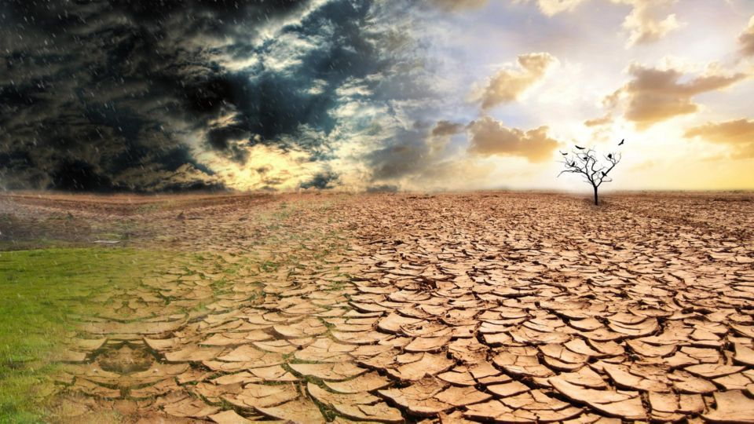

La contaminación es la introducción de sustancias en un medio que provocan que este sea inseguro o no apto para su uso. El medio puede ser un ecosistema, un medio físico o un ser vivo. El contaminante puede ser una sustancia química, energía (como sonido, calor, luz o radiactividad).
Es siempre una alteración negativa del estado natural del medio, y por lo general, se genera como consecuencia de la actividad humana considerándose una forma de impacto ambiental.
La contaminación puede clasificarse según el tipo de fuente de donde proviene, o por la forma de contaminante que emite o medio que contamina. Existen muchos agentes contaminantes entre ellos las sustancias químicas (como plaguicidas, cianuro, herbicidas y otros.), los residuos urbanos, el petróleo, o las radiaciones ionizantes. Todos estos pueden producir enfermedades, daños en los ecosistemas o el medioambiente. Además existen muchos contaminantes gaseosos que juegan un papel importante en diferentes fenómenos atmosféricos, como la generación de lluvia ácida, el debilitamiento de la capa de ozono, y el cambio climático.
Hay muchas formas de combatir la contaminación, y legislaciones internacionales que regulan las emisiones contaminantes de los países que adhieren estas políticas. La contaminación está generalmente ligada al desarrollo económico y social. Actualmente muchas organizaciones internacionales como la ONU ubican al desarrollo sostenible como una de las formas de proteger al medioambiente para las actuales y futuras generaciones.

En 1272 Eduardo I de Inglaterra en una proclamación prohibió la quema de carbón en Londres, cuando la contaminación atmosférica en la ciudad se convirtió en un problema.
La contaminación del aire continuó siendo un problema en Inglaterra, especialmente con la llegada de la revolución industrial. Londres también registró uno de los casos más extremos de contaminación del agua con aguas residuales durante el Gran Hedor del Río Támesis en 1858, esto dio lugar que poco después a la construcción del sistema de alcantarillado de Londres. Fue la revolución industrial la que inició la contaminación como un problema medioambiental. La aparición de grandes fábricas y el consumo de inmensas cantidades de carbón y otros combustibles fósiles aumentaron la contaminación del aire y ocasionando un gran volumen de vertidos de producto químicos industriales al ambiente, a los que hay que sumar el aumento de residuos humanos no tratados.
En 1881 Chicago y Cincinnati fueron las dos primeras ciudades estadounidenses en promulgar leyes para garantizar el aire limpio. Otras ciudades estadounidenses siguieron el ejemplo durante principios del siglo XX, cuando se creó un pequeño Departamento de Contaminación del Aire, dependiente del Departamento del Interior. Los Ángeles y Donora (Pensilvania) experimentaron grandes cantidades de smog durante la década del 1940.
La contaminación se convirtió en un asunto de gran importancia tras la Segunda Guerra Mundial, después de que se hiciesen evidentes las repercusiones de la lluvia radiactiva ocasionada por las guerras y ensayos nucleares. En 1952 ocurriría un evento catastrófico de tipo local, conocido como la Gran Niebla de 1952 en Londres, que mató a unas 4 000 personas. Este trágico evento motivó la creación de una de las más importantes leyes modernas sobre el medio ambiente: la Ley del Aire Limpio de 1956.
En los Estados Unidos la contaminación comenzó a recibir la atención pública a mediados de la década de 1950 y a principios de los años 1970, fechas que coinciden con la creación y aprobación de la Ley del Aire Limpio, la Ley del Agua Limpia, la Ley de Política Ambiental de los Estados Unidos y la Ley del Ruido. da Algunos sucesos han ayudado a concienciar a la gente sobre los efectos negativos de la contaminación en los Estados Unidos. Entre estos se encuentra el vertido de bifenilos policlorados (PCB) en el río Hudson por parte de la compañía General Electric, dando como resultado el establecimiento de una serie de prohibiciones emitidas en 1974 por la EPA, como la pesca en sus aguas. Otro suceso es el desastre ecológico en el barrio de Love Canal en Niagara Falls. El conjunto residencial de Love Canal fue construido sobre un terreno en el cual la empresa Hooker Chemical and Plastics Corporation había enterrado en 1947 residuos químicos y dioxinas. Así, en 1978 los habitantes de Love Canal tuvieron que abandonar sus viviendas al descubrirse filtraciones de agua en la superficie con materiales cancerígenos disueltos, convirtiéndose así en una noticia a nivel nacional, y promoviendo la creación en 1980 de la Ley de Superfondo (en inglés «Superfund»), donde se incluye una lista de los agentes contaminantes más peligrosos.
Con el desarrollo de la ciencia nuclear apareció la contaminación radioactiva, la cual puede permanecer en el ambiente de manera letalmente radioactiva por millones de años.11 Los países dedicados a la experimentación y fabricación de armas nucleares producen desechos militares radioactivos, y en varios casos, el no haberlos depositado en lugares seguros ha causado desastres ecológicos. En las décadas de 1950 y 1960, cuando aún existía la Unión Soviética, los desechos radioactivos producidos por la instalación nuclear Mayak fueron arrojados en el lago Karachai y en el río Techa, ocasionando casos de leucemia en la población y afectando directamente a la provincia de Cheliábinsk. De acuerdo con el Worldwatch Institute, el lago Karachai era el sitio «más contaminado de la Tierra.
En la Guerra Fría se realizaron ensayos con armas nucleares, algunas veces cerca de zonas habitadas y con mayor frecuencia durante las primeras etapas de investigación y desarrollo armamentístico. El impacto negativo que ha tenido la contaminación nuclear sobre las poblaciones, y el progresivo entendimiento de los efectos de la radioactividad en la salud humana, son también algunas de las dificultades que complican el uso de la energía nuclear.[cita requerida] La posibilidad de que ocurra una catástrofe como en los accidentes de Three Mile Island y Chernóbil hace desconfiar al público.[cita requerida] Uno de los legados de las detonaciones y ensayos nucleares, antes de que se instaurasen la mayoría de prohibiciones y tratados nucleares, fue el considerable incremento de los niveles de radioactividad.
La contaminación se produce cuando los residuos contaminan el entorno natural; trayendo como consecuencias cambios que afectan a nuestro estilo de vida normal, de manera perjudicial. Los residuos son los elementos principales de la contaminación. La contaminación altera nuestro ecosistema y el equilibrio del medio ambiente.
El tráfico rodado: los coches y camiones son los mayores contaminantes urbanos porque a diario circulan arrojando al aire gases tóxicos perjudiciales para la salud. Estos vehículos contaminan a causa de la combustión de los hidrocarburos que utilizan para moverse, y el desgaste de los frenos y ruedas.
En las ciudades existe otra fuente de contaminación como son las construcciones y las demoliciones: estas actividades desprenden polvos y gases que dañan el aire de la zona en que se desarrollan, y a su vez contaminan el agua donde arrojan sus desechos.
Los Combustibles fósiles: el confort y el bienestar de los habitantes de las grandes ciudades trajo como consecuencia el aumento en el consumo de combustibles fósiles. La producción de carbón, de petróleo y de gas natural crece de la mano del ascenso de los niveles de contaminación del aire, del suelo y del agua del planeta.
La deforestación: la tala indiscriminada en bosques y selvas impide que los árboles, encargados de purificar el aire, realicen esta tarea y que miles de animales y plantas se extingan por no tener un lugar donde vivir y crecer.
Problemas para la salud: la contaminación hace que las personas estemos cada vez más expuestas a padecer problemas cardiovasculares, con el grave peligro que esto entraña para nuestra salud y vida.
Debilitamiento de la capa de ozono: la capa de ozono es la que nos protege de los rayos del Sol, los cuales pueden llegar a ser mortíferos sin esta capa. la consecuencia de este debilitamiento es que cada vez nos protege menos y, por ende, cada vez tenemos una mayor temperatura en el planeta. Esto no solo hace que cada vez haya más zonas desiertas en las que es imposible vivir, sino que también hace que el hielo en los polos se deshaga y mueran muchas especies por ello. No hace falta mencionar que esto hace subir indudablemente el nivel del mar y que, de seguir así, muchas ciudades costeras se verán arrasadas, quedándose sin playas y sin zona costera.
La contaminación afecta al suelo y al agua: la contaminación al medio ambiente afecta al agua y al suelo, lo que hace que cada vez haya más especies en peligro de extinción. El agua no es potable en una gran cantidad de sitios y el suelo para la siembre no tiene los nutrientes necesarios, lo que hace que cada vez se pueda cultivar menos y que el número de cosechas para nuestro sustento sea cada vez menor.
La contaminación afecta al clima: seguro que ya te has dado cuenta que los inviernos pueden ser mucho más fríos o que los veranos son mucho más calurosos, a la vez que seguro te has dado cuenta que las estaciones como el invierno y el verano pueden ser más largas y que las de temperaturas medias, son cada vez más cortas. Todos estos cambios y los fenómenos que no se habían visto desde hace mucho tiempo o incluso nunca se habían visto son causados por la contaminación.

La prevención de la contaminación ambiental representan un enfoque que se orienta a evi-tar y/o reducir la misma, con el fin de preservar la calidad ambiental o minimizar el impacto sobre los ecosistemas.
Este cambio exige la participación de los diversos actores involucrados en la problemática ambiental fronteriza y debe incluir acciones, proyectos y programas vinculados con la edu-cación y legislación ambiental, uso eficiente de recursos, reuso y reciclamiento de productos y desechos y demás aspectos relativos.
Uno de los esfuerzos más importantes que contribuye de manera efectiva a mejorar el esta-do del medio ambiente y de los recursos naturales es, sin lugar a dudas, la prevención de la contaminación ambiental inducida por la acción humana, misma que afecta la integridad física, biológica, química y radiológica del medio ambiente. Considerando que la contamina-ción ambiental es causada por la presencia de materia o energía cuya naturaleza, ubicación o cantidad produce efectos ambientales indeseables, el concepto de prevención, debe in-cluir dos tipos de acercamientos fundamentales: la prevención ambiental primaria orientada a evitar la contaminación y como consecuencia, a preservar el medio ambiente y los recur-sos naturales libres de agentes contaminantes, y la prevención ambiental secundaria enfo-cada a reducir la contaminación que tenga efectos adversos sobre los ecosistemas.
En los programas de prevención se encuentran involucradas diversas estrategias de acción para evitar, reducir y/o eliminar la contaminación desde su generación o fuente. A su vez, la reducción de la contaminación incluye tres vertientes; la reducción del volumen, toxicidad y/o de ambas.
En materia de prevención de la contaminación ambiental, existen acciones muy concretas que promueven tanto programas de prevención, como de atención a contingencias ambien-tales y aplicación de la ley, en donde se pueden ver acciones en dos grandes rubros, audi-torias ambientales voluntarias y actividades de inspección y vigilancia.
El Instituto Nacional de Ecología se ha preocupado por impulsar programas de prevención de la contaminación en diferentes sectores. Como parte de este esfuerzo, se ha involucrado a instituciones de educación y organismos empresariales. En la frontera norte, el Grupo de Prevención de la Contaminación del Programa Frontera XXI ha desarrollado algunas accio-nes entre las que se encuentra la publicación de manuales bilingües sobre la prevención de la contaminación para giros seleccionados, elaborados por EPA/SEDESOL en 1993 y EPA/SEMARNAP en 1996.
Para el sector industrial, la prevención de la contaminación se ha vuelto un factor crítico pa-ra ser competitivo, por lo que los programas de prevención incluyen estrategias como:
Mejor administración de inventarios para evitar el desperdicio de materias primas.
Minimización de residuos a través de la reingeniería de procesos, equipo y/o productos, con programas integrales de mantenimiento.
Uso eficiente de los recursos; agua, energía, etc.
Reuso y reciclaje de subproductos y desechos.
Cambio de tecnologías que inclusive utilizan materiales menos contaminantes o produc-tos reciclables.
Auditorias ambientales de los procesos para identificar procesos o pasos productivos donde existe potencial de mejora ambiental.
Con la aplicación de estos conceptos, el Fondo para la Defensa del Medio Ambiente (EDF-Environmental Defense Fund) en colaboración con el Tecnológico de Monterrey y otras ins-tituciones ha instrumentado un proyecto piloto en Matamoros, Tamaulipas y busca la posibi-lidad de ampliar el programa a otras ciudades en la frontera. El proyecto tiene como objeti-vo, trabajar estrechamente con las empresas para la creación de un sistema práctico y voluntario, que identifique oportunidades económicamente viables en materia de “produc-ción más limpia,” así como acciones dirigidas a la conservación de recursos naturales. Con este proyecto se pretende demostrar que en la ejecución de dichas acciones ambientales se pueden lograr ahorros en los costos de operación a través de mejoras en la eficiencia del proceso industrial, esto en un espíritu de ganar-ganar. De esta forma, se puede proveer asistencia técnica y acceso a recursos de información a empresas ubicadas dentro de par-ques industriales en México con el fin de mejorar sus prácticas de gestión ambiental y simultáneamente promover su eficiencia, competitividad y rentabilidad.
Como se sabe el problema de la contaminación es algo que nos compete a todos al ver como nuestro medio ambiente se deteriora con el paso de los días y el crecimiento industrial crece velozmente sin tomar en cuenta los daños que ocasión con sus desechos tóxicos. Pero, ¿Qué hacemos como sociedad para evitar esto? Sabemos de la existencia de sociedades al cuidado del medio ambiente pero ¿Cuántos nos unimos a la causa? Sabiendo que es en beneficio de nosotros mismos y futuras generaciones. Aquí mencionaremos los tipos de contaminación y sus efectos en el ser humano para tratar de hacer conciencia y ponernos en acción con una estrategia que se planteara más adelante.
El suelo es un constituyente normal de la Naturaleza, con componentes minerales y orgánicos y con componentes biológicos constituidos por organismos que viven en él.
La contaminación del suelo: es la incorporación al suelo de materias extrañas, como basura, desechos tóxicos, productos químicos, y desechos industriales, este tipo de contaminación produce un desequilibrio físico, químico y biológico que afecta negativamente las plantas, animales y humanos.
El uso de abonos, la sedimentación de contaminantes atmosféricos de origen industrial, los vertidos industriales y los depósitos y escombreras producen alteraciones en los suelos difícilmente cuantificables, sobre las que es problemática la previsión de efectos.
El aire limpio está compuesto principalmente por nitrógeno y oxígeno, en pequeñas proporciones se puede encontrar vapor de agua y dióxido de carbono. La contaminación del aire, proviene de la adición de sustancias emitidas a la atmósfera que causan un desequilibrio en la composición original. El aire contaminado contiene gases, polvos, olores y humos en grandes cantidades que dañan la salud de las personas, animales y plantas. Existen dos tipos de contaminantes:
Los que son arrojados directamente a la atmósfera como resultado de un proceso de combustión se llaman contaminantes primarios, estos son: dióxido de azufre, monóxido de carbono, vapores de combustibles y partículas suspendidas.
Una vez en el aire, algunos contaminantes primarios reaccionan con otros compuestos y forman contaminantes de igual o mayor toxicidad, estos se denominan contaminantes secundarios.
La contaminación daña de diferente manera la salud de los individuos dependiendo de su nivel de exposición a los contaminantes, de su capacidad y de su resistencia física.
La contaminación del agua se produce a través de la introducción directa o indirecta en los acuíferos o cauces de agua de diversas sustancias que pueden ser consideradas como contaminantes.
En el ambiente laboral e industrial el agua contaminada puede producir daños de salud a los trabajadores, las vías de penetración del agua contaminada en el ser humano son.
Como sabemos, la contaminación del agua no sólo afecta a los propios humanos en sí, sino a la fauna y a los diferentes seres vivos que pueden vivir en la misma. Eso sin contar que el agua contaminada puede ser portadora de una gran variedad de enfermedades, algunas de ellas mortales.
Se le llama contaminación auditiva al exceso de sonido que altera las condiciones normales de ambiente en una determinada zona si bien el ruido no se acumula ni se traslada o se mantiene en el ambiente o atreves del tiempo como las otras contaminaciones pero no deja de ser tan dañina como las otras contaminaciones que si se mantienen y se acumulan y sin en cambio también pueden causar grandes daños a la salud y la calidad de vida de las personas si se controla adecuadamente aunque todavía no nos hemos dado cuenta del todo de esta contaminación vivir en una ciudad tiene muchas ventajas pero también puede traer serias afecciones en la salud.
Por los altos niveles de ruido, cuatro de cada cinco habitantes de las ciudades industrializadas padecen alguna deficiencia auditiva en la sociedad sin embargo son pocos los que se percatan de su problema.
Invisible e irreversible es el camino que conduce a la sordera, y lo más grave es que las personas se acostumbran al ruido nocivo y lo ven como parte de su vida.
Alteración visual de la imagen y fisonomía del entorno urbano causada por acumulación de materia prima, productos, desechos, abandono de edificaciones y bienes materiales, así como, violación en las densidades y características físicas de publicidad.
Nuestro cerebro tiene una determinada capacidad de absorción de datos. Los sentidos son los encargados de transmitir al cerebro toda información que perciben del entorno. Entre ellos, el sentido de la vista es uno de los más complejos y de los que mayor incidencia tiene en la percepción global del entorno y, por lo tanto, en las reacciones psicofísicas del hombre.
Cuando una imagen supera el máximo de información que el cerebro puede asimilar, se produce una especie de “stress” visual, el panorama perceptual se vuelve caótico y la lectura ordenada del paisaje se hace imposible.
La contaminación ambiental es un problema mundial muy grave, sobre todo en los grandes centros urbanos donde muchas personas tienen problemas de salud debido a la contaminación. Hay muchas formas en que podemos evitar la contaminación, como por ejemplo evitar circular por avenidas con mucho trafico, en la medida de lo posible.
Pero también es muy importante que cada uno de nosotros tomemos conciencia del problema de la contaminación. Si todos los habitantes de una gran ciudad fueran conscientes de que la solución para la contaminación está en cada uno, en gran parte el problema estaría resuelto.
Lo ideal para evitar la contaminación sería directamente mudarnos a una zona libre de contaminación. Es una medida drástica pero que muchas personas la llevan a cabo.
A veces los mismos médicos recomiendan a un paciente un cambio de aire, que puede mejorar mucho una situación de asma, alergias difíciles o alguna enfermedad respiratoria por ejemplo.
Aunque de alguna manera esto significa dar la espalda al problema. Podemos quedarnos en la ciudad y procurar no contaminar, y buscar una conciencia ecológica que cuide el medio ambiente. Está en cada uno de nosotros evitar la contaminación. ¿Cómo? Preferir la bicicleta o caminar antes que el automóvil es una buena forma de comenzar, no solamente estaremos contribuyendo con el medio ambiente, sino que nos traerá un beneficio en nuestra calidad de vida.
Los mayores contaminantes que los humanos producimos de a toneladas diarias proviene principalmente de los envases de todo lo que consumimos, entonces deberíamos elegir aquellos productos que vienen envasados con elementos biodegradables derivados del papel como el cartón o por ejemplo, y podemos usar envases retornables para tomar nuestra bebida gaseosa preferida.
Uno de los principales contaminantes de mi comunidad es la basura como vasos de plasticos, bolsas de compras y otros tipos de contaminates, el cual se produce a travez de festejos que hacen las familias ya sea en sus hogares o en cualquier otro lugar.
Pero el verdadero problema es la basura que dejan despues de terminar un festejo lo cual causa que las calles se llenen de basura
Otro de los problemas es la Contaminacion Visual como en las paredes de hogares y de la iglesia pintadas por todos lados por el bandalismo que se encuentra en las noches.
Al pasar esto se pierde todo lo que se quiere dar a conocer acerca de lo que es nuestra comunidad.
Para que esto no pase se tedra que dar razonamiento con base en folletos que se les dara pasando a cada casa y darles a conocer como seria nuestra comunidad sin estos problemas que suceden en nuestra comunidad
Y tambien se hara en las escuelas para darles a conocer a los jovenes y niños que es lo que se esta perdiendo.